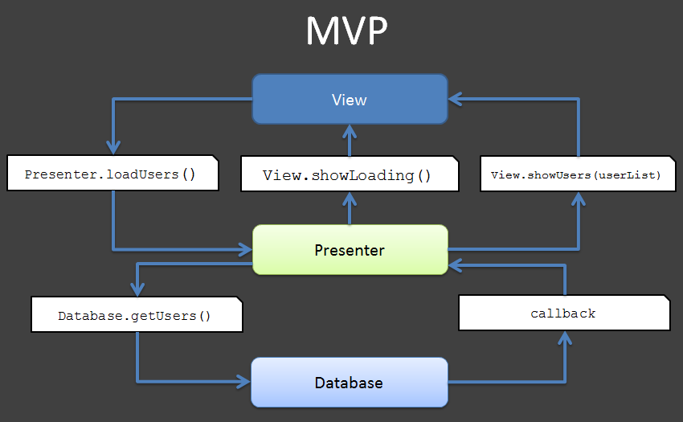
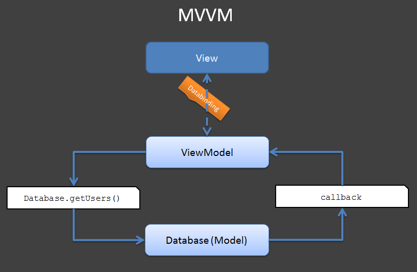
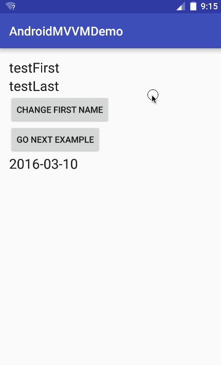

Android MVVM
在上一篇博文中介绍了 。MVVM 是从 MVP 的进一步发展与规范，MVP 隔离了 M 与 V 的直接联系后，靠 Presenter 来中转，所以使用 MVP 时 P 是直接调用 View 的接口来实现对视图的操作的，M 与 V是隔离了，方便测试了，但代码还不够优雅简洁啊，所以 MVVM 就弥补了这些缺陷。
概述
MVVM模式包含了三个部分：
- Model :基本业务逻辑
- View :视图内容
ViewModel: 将前面两者联系在一起的对象
当View有用户输入后，ViewModel通知Model更新数据，同理Model数据更新后，ViewModel通知View更新。
MVP MVVM区别


可以看到 ViewModel 承担了 Presenter 中与 view和 Model 交互的职责，与 MVP模式不同的是，VM与 V 之间是通过 Datebingding 实现的，而 P是持有 View 的对象，直接调用 View 中的一些接口方法来实现。ViewModel可以理解成是View的数据模型和Presenter的合体。**它通过双向绑定(松耦合)解决了MVP中Presenter与View联系比较紧密的问题。 **
环境搭建
Android 的 Gradle 插件版本不低于 1.5.0-alpha1：
classpath 'com.android.tools.build:gradle:1.5.0'
然后修改对应模块（Module）的 build.gradle：
android {
....
dataBinding {
enabled = true
}
}
注：Android stuido 的版本要大于1.3
Android Studio目前对binding对象没有自动代码提示，只会在编译时进行检查。
基础入门
布局问文件
相比传统的 xml，根节点编程了layout，里面包括了data节点 和传统的视图。data节点就像是连接 View 和 Modle 的桥梁。在data节点中声明一个variable变量，使其可以在这个layout中使用
<layout xmlns:android="http://schemas.android.com/apk/res/android">
<data>
<variable name="user"type="com.example.User"/>
</data>
<!--原先的根节点（Root Element）-->
<LinearLayout>
....
</LinearLayout>
</layout>
例如在 TextView 中使用
<TextView android:layout_width="wrap_content"
android:layout_height="wrap_content" android:text="@{user.firstName}"/>
数据对象
定义一个 User java bean 类
public class User {
private final String firstName;
private final String lastName;
public User(String firstName, String lastName) {
this.firstName = firstName;
this.lastName = lastName;
}
public String getFirstName() {
return firstName;
}
public String getLastName() {
return lastName;
}
}
在layout中定义User中的对象，然后把它跟布局文件中声明的变量进行绑定
定义 Variable
<data>
<variable
name="user"
type="io.github.xuyushi.androidmvvmdemo.User" />
</data>
- 变量名为
user - 变量类型为
"io.github.xuyushi.androidmvvmdemo.User"
data也支持 import
<data>
<import type="io.github.xuyushi.androidmvvmdemo.User"/>
<variable
name="user"
type="User" />
</data>
注意坑
import 并不能和 java 一样可以 import xx.xxx.*，必须具体写明每个要导入的类名，如
<import type="io.github.xuyushi.androidmvvmdemo.User"/>
<import type="io.github.xuyushi.androidmvvmdemo.MyHandler"/>
// this is WRONG
<import type="io.github.xuyushi.androidmvvmdemo.*"/>
编译之后，插件会根据 xml 的命名（activity_main），在 output会生成ActivityMainBinding类
java.lang.*包中的类会被自动导入，可以直接使用，例如要定义一个 String 类型的变量：
<variable name="firstName" type="String" />
绑定 Variable
修改MainActivity中的onCreate，用 DatabindingUtil.setContentView() 来替换掉 setContentView()，然后创建一个 user 对象，通过 binding.setUser(user) 与 variable 进行绑定。
public class MainActivity extends AppCompatActivity {
@Override
protected void onCreate(Bundle savedInstanceState) {
super.onCreate(savedInstanceState);
ActivityMainBinding binding = DataBindingUtil.setContentView(this, R.layout.activity_main);
User user = new User("testFirst", "testLast");
binding.setUser(user);
}
}
如果使用的 ListView 或者RecyclerView可以使用这个
ListItemBinding binding = ListItemBinding.inflate(layoutInflater, viewGroup, false);
//or
ListItemBinding binding = DataBindingUtil.inflate(layoutInflater, R.layout.list_item, viewGroup, false);
有时候不能预先知道 Bingding 类的种类，这时候可以使用DataBindingUtil 类:
ViewDataBinding binding = DataBindingUtil.inflate(LayoutInflater, layoutId,
parent, attachToParent);
ViewDataBinding binding = DataBindingUtil.bindTo(viewRoot, layoutId);
支持的语法
Mathematical + - / * %
String concatenation +
Logical && ||
Binary & | ^
Unary + - ! ~
Shift >> >>> <<
Comparison == > < >= <=
instanceof
Grouping ()
Literals - character, String, numeric, null
Cast
Method calls
Field access
Array access []
Ternary operator ?:
不支持的语法
this
super
new
ActivityMainBinding类是自动生成的，所有的 set 方法也是根据 variable 名称生成的。例如，我们定义了两个变量。
<data>
<variable name="firstName" type="String" />
<variable name="lastName" type="String" />
</data>
那么会生成两个 set方法
setFirstName(String firstName);
setLastName(String lastName);
使用Variable
数据与 Variable 绑定之后，xml 的 UI 元素就可以直接使用了
<TextView
android:text="@{user.firstName}"
android:layout_width="wrap_content"
android:layout_height="wrap_content" />
<TextView
android:text="@{user.lastName}"
android:layout_width="wrap_content"
android:layout_height="wrap_content" />
绑定事件
可以直接在 xml 导入android.view.View.OnClickListener，并制定其点击事件
<variable
name="clickListener"
type="android.view.View.OnClickListener" />
...
android:onClick="@{clickListener}"
...
holder.binding.setClickListener(new View.OnClickListener() {
@Override
public void onClick(View v) {
//do something
});
进阶用法
使用类的方法
//Error:(27, 29) cannot find method addSomeThing in class io.github.xuyushi.androidmvvmdemo.MyUtill
类的别名
如果导入不同的包中有相同的类名，使用import 中的 alias 属性。
<import type="com.example.home.data.User" />
<import type="com.examle.detail.data.User" alias="DetailUser" />
<variable name="user" type="DetailUser" />
数据绑定
直接修改数据对象并不能直接更新 UI，Android的Data Binding模块给提供了通知机制，有3种类型，分别对应于类(Observable)，字段(ObservableField)，集合类型（Observable Collections）。
Android的Data Binding模块给提供了通知机制，有3种类型，分别对应于类(Observable)，字段(ObservableField)，集合类型（Observable Collections）。
Observable Objects
目前 DataBinding 暂时只支持单向绑定。
要实现 Observable Binding，首先得有一个 implement 了接口android.databinding.Observable的类，为了方便，Android 原生提供了已经封装好的一个类 - BaseObservable，并且实现了监听器的注册机制
public class User extends BaseObservable {
private String firstName;
private String lastName;
@Bindable
public String getFirstName() {
return this.firstName;
}
@Bindable
public String getLastName() {
return this.lastName;
}
public void setFirstName(String firstName) {
this.firstName = firstName;
notifyPropertyChanged(io.github.xuyushi.androidmvvmdemo.BR.firstName);
}
public void setLastName(String lastName) {
this.lastName = lastName;
notifyPropertyChanged(io.github.xuyushi.androidmvvmdemo.BR.lastName);
}
}
The Bindable annotation should be applied to any getter accessor method of an {@link Observable} class. Bindable will generate a field in the BR class to identify the field that has changed.
Bindable注解是为了在编程的时候生成 BR 类，Bindable会在 BR 类中生成一个域变量 ，来表明这个域有木有被改变。通过代码可以看出，当数据发生变化时还是需要手动发出通知。 通过调用 notifyPropertyChanged(BR.firstName) 可以通知系统 BR.firstName 这个 entry 的数据已经发生变化，需要更新 UI。
ObservableFields
具体到成员变量,这种方式无需继承 BaseObservable
如果变量比较少，都是简单的数据类型是时，可以用ObservableFields ， ObservableFields 自包含具有单个字段的observable对象。它有所有基本类型和一个是引用类型。要使用它需要在data对象中创建public final字段：
private static class User extends BaseObservable {
public final ObservableField<String> firstName =
new ObservableField<>();
public final ObservableField<String> lastName =
new ObservableField<>();
public final ObservableInt age = new ObservableInt();
}
注意
- 可以在 java bean 中定义，也可以在 activity 中 或者bind 出定义
- 使用
ObservableFields在 Model 中的 @Bindable get set 方法都可以去掉 - 当
firstName、lastName变化时，UI 会得到通知，使用的赋值语句为user.firstName.set("Google");
Observable 集合
一些app使用更多的动态结构来保存数据。Observable集合允许键控访问这些data对象。ObservableArrayMap用于键是引用类型,如String。
ObservableArrayMap<String, Object> user = new ObservableArrayMap<>();
user.put("firstName", "Google");
user.put("lastName", "Inc.");
user.put("age", 17);
在layout文件中，通过String键可以访问map
<data>
<import type="android.databinding.ObservableMap"/>
<variable name="user" type="ObservableMap<String, Object>"/>
</data>
…
<TextView
android:text='@{user["lastName"]}'
android:layout_width="wrap_content"
android:layout_height="wrap_content"/>
<TextView
android:text='@{String.valueOf(1 + (Integer)user["age"])}'
android:layout_width="wrap_content"
android:layout_height="wrap_content"/>
当 key 是 inter 是， ObservableArrayList 比较适用
ObservableArrayList<Object> user = new ObservableArrayList<>();
user.add("Google");
user.add("Inc.");
user.add(17);
<data>
<import type="android.databinding.ObservableList"/>
<import type="com.example.my.app.Fields"/>
<variable name="user" type="ObservableList<Object>"/>
</data>
…
<TextView
android:text='@{user[Fields.LAST_NAME]}'
android:layout_width="wrap_content"
android:layout_height="wrap_content"/>
<TextView
android:text='@{String.valueOf(1 + (Integer)user[Fields.AGE])}'
android:layout_width="wrap_content"
android:layout_height="wrap_content"/>
binding 生成
binding 类连接了 layout中的variables与Views。，所生成的Binding类都扩展了android.databinding.ViewDataBinding
创建
Binding应在inflation之后就立马创建，以确保View层次结构没被改变。
首先 inflate
MyLayoutBinding binding = MyLayoutBinding.inflate(layoutInflater);
MyLayoutBinding binding = MyLayoutBinding.inflate(LayoutInflater, viewGroup, false);
带 ID 的 View
同步 bind 我们可以不需要 view 实例，但是玩意需要也可以有
<TextView
android:id="@+id/firstName"
android:layout_width="wrap_content"
android:layout_height="wrap_content" />
上面代码中定义了一个 ID 为 firstName 的 TextView，那么它对应的变量就是
public final TextView firstName;
@Override
protected void onCreate(Bundle savedInstanceState) {
super.onCreate(savedInstanceState);
binding = DataBindingUtil.setContentView(this, R.layout.activity_view_with_ids);
}
public void showMyName(View view) {
binding.firstName.setText("liang");
binding.lastName.setText("fei");
}
这样就免去了些 findViewById 了
ViewStubs
ViewStubs跟正常的Views略有不同。他们开始时是不可见的，当他们要么设置为可见或被明确告知要载入时，它们通过载入另外一个layout取代了自己。
当载入另一个layout，为新的布局必需创建一个Binding。因此，ViewStubProxy必需监听ViewStub的OnInflateListener监听器并在那个时候建立Binding。因为只有一个可以存在，ViewStubProxy允许开发者在其上设置一个OnInflateListener它会在建立Binding后调用。
<layout xmlns:android="http://schemas.android.com/apk/res/android">
<LinearLayout
...>
<ViewStub
android:id="@+id/view_stub"
android:layout="@layout/view_stub"
... />
</LinearLayout>
</layout>
在 Java 代码中获取 binding 实例，ViewStubProy 注册ViewStub.OnInflateListener 事件：
binding = DataBindingUtil.setContentView(this, R.layout.activity_view_stub);
binding.viewStub.setOnInflateListener(new ViewStub.OnInflateListener() {
@Override
public void onInflate(ViewStub stub, View inflated) {
ViewStubBinding binding = DataBindingUtil.bind(inflated);
User user = new User("fee", "lang");
binding.setUser(user);
}
});
动态 Variables
有时候不止具体绑定的对象，以 RecyclerView 为例，Adapter 的 DataBinding 需要动态生成，因此我们可以在 onCreateViewHolder 的时候创建这个 DataBinding，然后在 onBindViewHolder 中获取这个 DataBinding。
public static class BindingHolder extends RecyclerView.ViewHolder {
private ViewDataBinding binding;
public BindingHolder(View itemView) {
super(itemView);
}
public ViewDataBinding getBinding() {
return binding;
}
public void setBinding(ViewDataBinding binding) {
this.binding = binding;
}
}
@Override
public BindingHolder onCreateViewHolder(ViewGroup viewGroup, int i) {
ViewDataBinding binding = DataBindingUtil.inflate(
LayoutInflater.from(viewGroup.getContext()),
R.layout.list_item,
viewGroup,
false);
BindingHolder holder = new BindingHolder(binding.getRoot());
holder.setBinding(binding);
return holder;
}
@Override
public void onBindViewHolder(BindingHolder holder, int position) {
User user = users.get(position);
holder.getBinding().setVariable(BR.user, user);
holder.getBinding().executePendingBindings();
}
属性 Setter
每当绑定值的变化，生成的Binding类必须调用setter方法。Data Binding框架有可以自定义赋值的方法。
自动Setters
对于一个属性，Data Binding试图找到setAttribute方法。与该属性的namespace并不什么关系，仅仅与属性本身名称有关。
例如，有关TextView的android:text属性的表达式会寻找一个setText(String)的方法。如果表达式中的参量是一个int，Data Binding会搜索的setText(int)方法。注意：要表达式返回正确的类型，如果需要的话使用转型。Data Binding仍会运行即使没有给定名称的属性存在。然后，您可以通过Data Binding轻松地为任何setter“创造”属性。例如，DrawerLayout没有任何属性，但可以有很多的setters。您可以使用其中的一个setters。
<android.support.v4.widget.DrawerLayout
android:layout_width="wrap_content"
android:layout_height="wrap_content"
app:scrimColor="@{@color/scrim}"
app:drawerListener="@{fragment.drawerListener}"/>
这里我们增加了一个命名空间app，并且注意DrawerLayout的app:scrimColor属性，这里和我们自定义view时自定义的属性一样，但是这里并不需要我们去重写DrawerLayout,此时，我们可以自己定义setTcrimColor、setDrawerListener的方法
重命名的Setters
一些有setters的属性按名称并不匹配。对于这些方法，属性可以通过BindingMethods注解相关联。这必须与一个包含BindingMethod注解的类相关联，每一个用于一个重命名的方法。例如，android:tint属性与setImageTintList相关联，而不与setTint相关。
@BindingMethods({
@BindingMethod(type = "android.widget.ImageView",
attribute = "android:tint",
method = "setImageTintList"),
})
自定义Setters
有些属性需要自定义绑定逻辑。例如，对于android:paddingLeft属性并没有相关setter。相反，setPadding(left, top, right, bottom)是存在在。一个带有BindingAdapter注解的静态绑定适配器方法允许开发者自定义setter如何对于一个属性的调用。
Android的属性已经创造了BindingAdapters。举例来说，对于paddingLeft：
@BindingAdapter("android:paddingLeft")
public static void setPaddingLeft(View view, int padding) {
view.setPadding(padding,
view.getPaddingTop(),
view.getPaddingRight(),
view.getPaddingBottom());
}
Binding适配器对其他定制类型非常有用。例如，自定义loader可以用来异步载入图像。
当有冲突时，开发人员创建的Binding适配器将覆盖Data Binding默认适配器。
您也可以创建可以接收多个参数的适配器。
@BindingAdapter({"bind:imageUrl", "bind:error"})
public static void loadImage(ImageView view, String url, Drawable error) {
Picasso.with(view.getContext()).load(url).error(error).into(view);
}
loadImage 可以放在任意类中，该类中只有一个静态的方法imageLoader，该方法有3个参数，一个是需要设置数据的view， 一个是我们需要的url、有个个是错误加载的图像，值得注意的是那个BindingAdapter注解，看看他的参数，是一个数组，内容只有一个bind:imageUrl，仅仅几行代码，我们不需要 手工调用 （类 xxxxxxx）中的loadImage，也不需要知道loadImage方法定义到哪了，一个网络图片加载就搞定了这里面起关键作用的就是BindingAdapter 注解，这里要遵循一定的规则,、
以bind:开头，接着书写你在控件中使用的自定义属性名称。
转换器
在 xml 中为属性赋值时，如果变量的类型与属性不一致，通过 DataBinding 可以进行转换
例如，下面代码中如果要为属性 android:background 赋值一个 int 型的 color 变量：
<View
android:background="@{isError.get() ? @color/red : @color/white}"
android:layout_width="match_parent"
android:layout_height="wrap_content"
app:layout_height="@{height}" />
只需要定义一个标记了 @BindingConversion 的静态方法即可（方法的定义位置可以随意）：
@BindingConversion
public static ColorDrawable convertColorToDrawable(int color) {
return new ColorDrawable(color);
}
再举个栗子 ，假如你的控件需要一个格式化好的时间，但是你只有一个Date类型的变量。可以转化完成后在设置，此时更适合使用 conver
<layout xmlns:android="http://schemas.android.com/apk/res/android">
<data class=".Custom">
<variable
name="time"
type="java.util.Date" />
</data>
<TextView
android:layout_width="match_parent"
android:layout_height="wrap_content"
android:text="@{time}"/>
</layout>
binding.setTime(new Date());
看看 conver
public class ConvertUtil {
@BindingConversion
public static String convertDate(Date date) {
SimpleDateFormat sdf = new SimpleDateFormat("yyyy-MM-dd");
return sdf.format(date);
}
}
注：convert 可以放在任意包中，只要写明注解，已经被转换和转换成的类型，所以注意不要重复定义类型相同的 convert，使用 Converter 一定要保证它不会影响到其他的属性。举个栗子，int -> int 的 convert 就影响到了android:visibility
Android stuido 的预览支持
类似于 tools:text ,代码如下
<TextView
style="@style/TextAppearance.AppCompat.Large"
android:text="@{user.firstName,default=PLACEHOLDER}"
android:layout_width="wrap_content"
android:layout_height="wrap_content" />
举个例子

工程分为两个部分
- 第一个简单的例子，点击事件产生后，直接改变了，user 的数据，并没有对 view 操作的逻辑，但是 databinding 已经帮我们完成了一切
- 第二个例子是一个 recycleVIew 的例子，点击每个 cardview 增加一点数据
代码不贴了，放 github了
https://github.com/xuyushi/AndroidMVVMDemo
参考
https://www.zhihu.com/question/30976423
https://developer.android.com/intl/zh-cn/tools/data-binding/guide.html#generated_binding
https://segmentfault.com/a/1190000002876984
http://tech.vg.no/2015/07/17/android-databinding-goodbye-presenter-hello-viewmodel/
http://www.jianshu.com/p/4e3220a580f6
https://github.com/LyndonChin/MasteringAndroidDataBinding
http://www.cnblogs.com/dxy1982/p/3793895.html
https://realm.io/cn/news/data-binding-android-boyar-mount/?utm_source=tuicool&utm_medium=referral
https://www.aswifter.com/2015/07/04/android-data-binding-1/
http://blog.csdn.net/qibin0506/article/details/47720125